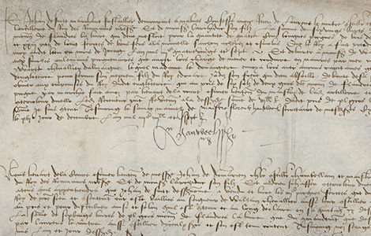

NATIONAL GEOGRAPHIC
Exclusive This is how you solve one of history's greatest cold cases
HISTORY & CULTURE
- 
In the summer of 1483, Edward V and his younger brother Richard entered the Tower of London and were never seen again. Their disappearance has long been laid at the feet of their uncle, Richard III, who has been accused for centuries of murdering them without any evidence. Author and history detective Philippa Langley, discoverer of Richard’s burial site, has taken on the case to find out what really happened to the Princes in the Tower and how to investigate a centuries-old murder. In this exclusive book excerpt, Langley takes readers through the investigation and turns up a new solution to an old mystery.
On August 25, 2012, the mortal remains of Richard III of England (1452-85) were discovered beneath a car park in Leicester. News of the discovery and the king’s eventual reburial went viral, reaching an estimated global audience of over 366 million. The return of the king captured the world’s imagination, but how had this come about? The search for Richard III had been instigated and led not by an academic or archaeologist, but by a writer.
The Looking for Richard Project was a research initiative which questioned received wisdom and dogma. It proved the “bones in the river” story to be false. For centuries, it had been believed that at the time of the Dissolution of the Monasteries (in the late 1530s), Richard III’s remains were exhumed from their resting place, carried through the streets of Leicester by a jeering mob and reburied near the River Soar. Later, it was claimed they were exhumed again and thrown into the river. Without any supporting evidence, the story had been repeated as truth and fact by leading historians.
The Looking for Richard Project heralded a new era of evidence-based Richard III research and analysis. It was a major opportunity for the academic community and leading historians to employ this new knowledge as the basis for further discoveries.
On Tuesday, March 24, 2015, during reburial week, a headline in the Daily Mail proclaimed, “It’s mad to make this child killer a national hero: Richard III was one of the most evil, detestable tyrants ever to walk this earth.” The writer, Michael Thornton, presented no verification or proof. His piece drew online comments from around the world, best summed up by Catherine from Chicago, United States, “This article shows a complete disregard for what counts as historical evidence.”
On Monday, March 22, 2015, as Richard’s coffin was received by Leicester Cathedral in preparation for reburial, Channel 4 TV presenter Jon Snow asked a Tudor historian for the evidence of Richard’s murder of the Princes in the Tower. “The evidence,” the historian replied, “is that he would have been a fool not to do it.”
In another of Snow’s television interviews on March 26, the evening of King Richard’s reburial, I was asked, “What next?”
“There’s a big question to answer now,” I replied. “What happened to the sons of Edward IV?”
Historical enquiry is littered with the unpicking of received wisdom. Antonia Fraser helped to debunk the myth that Marie Antoinette said “Let them eat cake.” Virginia Rounding refuted the claim that Catherine the Great had been killed by having sexual relations with a horse. William Driver Howarth disproved that the right of “prima nocta” (Droit de seigneur) existed in medieval Scotland (as depicted in the film Braveheart), and Guilhem Pépin established that the brutal massacre of 3,000 men, women, and children at Limoges in 1370, believed for centuries to have been carried out by England’s Black Prince, was in fact perpetrated by French forces on their own people. All had asked searching questions, thrown out old mythology, and started with a clean sheet.
It was exactly as my Looking for Richard Project had proceeded, irrevocably changing what we know. Could this approach apply to the mystery surrounding the Princes in the Tower?
While I considered my next steps, I watched with interest The Imitation Game (2014), starring Benedict Cumberbatch, the actor who had read the evocative poem “Richard” at the reburial in 2015. Loosely based on Andrew Hodges’ biography of Alan Turing, this highly acclaimed award-winning feature film retells the breaking of the Enigma code during the Second World War.
When you ask the right questions, the smallest detail can form the key to a major discovery. Could a small and perhaps seemingly insignificant discovery be the key to solving this most enduring of mysteries?
Comments :
- john Very good
- john Very good
Leave a Reply
Your email address will not be published. Required fields are marked*
Related posts:
-
 6 of the best Sir David Attenborough series to watch after Planet Earth III
6 of the best Sir David Attenborough series to watch after Planet Earth IIIAttenborough’s latest series, Planet Earth III, once again zooms in on the ever changing habitats of our world. The programme documented more than 43 countries over the course of nearly five years
View article -
 Sunshine and snow in Europe's southern most ski resort
Sunshine and snow in Europe's southern most ski resortThe aroma of a tapas bar is an incongruous sensation when dressed in ski kit, but it’s the end of a long day on the slopes, and plates of grilled squid, spicy patatas bravas and plump green olives are on offer, along with a bargain glass of Rioja
View article -
 How a commuter bridge turned into a bucket list experience
How a commuter bridge turned into a bucket list experienceI now see why climbing the Sydney Harbour Bridge ranks as one of Australia’s most popular experiences, attracting more than four million climbers (including, recently, Michelle and Barack Obama) since the first customer stepped onto its steel beams 25 years ago this week on October 1, 1998.
View article